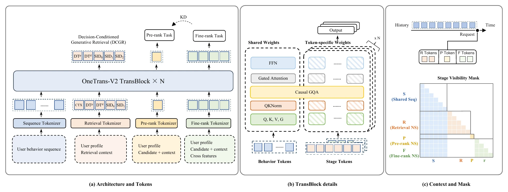
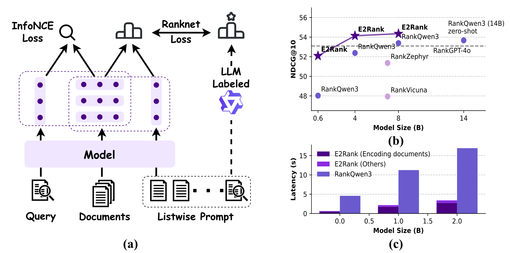

目录 · 9 节
1它到底在解决什么问题？2整体流程：训练时用奖励模型，线上只跑解码器3奖励模型怎么给一整屏打分？4解码器怎么一个位置一个位置地选？5业务规则放在哪里？6实验：哪些部件真的起作用？7我认为它的局限8一个推荐团队可以怎么试9评价做重排和混排的团队值得读：它把这两个长期靠规则的环节变成一个能靠加算力变好的生成问题，并且已经全量上线。决定这一屏展示什么的重排和混排，一直靠手写规则和小模型：商品卡、短视频、直播、广告卡怎么穿插，权重靠人调。OneTrans-GSR 把这两步合成一个自回归 Transformer，一个位置一个位置地生成整屏结果。训练时由一个奖励模型给整屏打分，引导强化学习。业务规则在解码时处理。必须满足的规则直接屏蔽违规候选，间隔和配额这类规则给违规候选扣分，比如连续几个位置里带某类标签的内容不能超过上限。离线实验里，奖励模型越大，它判断整屏好坏越准；解码器越大，奖励模型估出的下单和 GMV 收益越高。上线后，人均 GMV 提高 2.63%，重排加混排的端到端延迟还降了 13%。
它到底在解决什么问题？
这篇论文的场景是一个电商推荐系统的最后一步。上游的精排已经给候选打好分，候选来自不同业务：商品卡、短视频、直播和广告卡。最后一步要从这个候选池里选出固定数量的几条，排好顺序，定好不同类型怎么穿插，作为这一屏展示给用户。
原来的线上系统是一套"生成器加评估器"的方案：几个专门的生成器各自拼出几屏候选结果，再由一个单独训练的评估器挑一屏上线。拼的过程依赖大量手写规则，比如打散、配额、去重、疲劳控制、商业加权。
下面是一个示意，说明为什么这件事难：
| 候选（示意） | 类型 | 精排分 |
|---|---|---|
| A | 商品卡 | 0.9 |
| B | 商品卡 | 0.8 |
| C | 直播 | 0.6 |
| D | 短视频 | 0.5 |
| E | 广告卡 | 0.4 |
如果只按精排分取前四个，这一屏就是 A、B、C、D，两张同类商品卡挨在一起，广告卡也没有位置。可一条内容值多少，取决于它排在第几位、旁边是什么、整屏的类型搭配，所以整屏的好坏不能拆成每条内容的分数相加。规则系统只能在规则允许的少数排法里找，想覆盖更多排法，就得再加规则和部件。作者的判断是：这样一来，整屏质量靠的是专家经验和工程量，而不是数据和算力。
整体流程：训练时用奖励模型，线上只跑解码器
OneTrans-GSR 有两个模型：一个给整屏打分的奖励模型，一个逐位生成整屏的解码器。两者都用 OneTrans 的网络块搭成，参数各自独立。奖励模型只在离线用，训练时给强化学习打分，离线评估时给生成结果打分。线上只部署解码器。
| 阶段 | 做什么 | 产出 |
|---|---|---|
| 1. 奖励模型预训练 | 用线上真实曝光过的整屏和用户反馈训练 | 能给任意一屏打点击、下单、GMV 分的模型 |
| 2. 强化学习后训练 | 解码器在约束下采样多屏，冻结的奖励模型打分，用分数更新解码器 | 线上用的策略 |
| 线上服务 | 解码器并行生成几屏，选累计对数概率最高的一屏直接展示 | 这一屏的结果 |

因为奖励模型不上线，它的大小只受离线训练资源限制，可以比线上任何模型都大。这是"加算力就变好"能成立的一个前提。下面拆开讲。
奖励模型怎么给一整屏打分？
奖励模型的输入是一屏内容，按展示顺序排好，每条内容是一个 token，里面合了用户、物品、上下文特征，也带上游精排分。作者在最后加一个可学习的 EOS token。注意力是因果的：每条内容只看自己和排在前面的内容，EOS token 能看到整屏。所以EOS token 的输出就是这一屏按顺序读下来的总结，模型从它读出三个分数：整屏点击数、下单数和 GMV。
训练标签来自线上真实展示过的那一屏。另一种做法是把每条内容的预测加起来当整屏分，作者没有这么做，因为整屏分要能反映顺序和搭配。
还有一个长期目标：14 天内复购。复购太稀疏、来得也晚，不适合按整屏学。作者另训一个复购模型。对生成的一屏，每条内容算"被点的概率 × 点后购买的概率 × 购买后 14 天内复购的概率"，再整屏相加。前两个概率来自整屏奖励模型在每条内容上的辅助输出，复购概率来自复购模型。这样算的前提是一屏里用户最多消费一条，线上日志支持这一点：98.3% 的屏最多只有一次点击。 Hoot 说

- 示意：第一条 0.5×0.2×0.1＝0.01
- 示意：第二条 0.3×0.1×0.2＝0.006
- 整屏复购分＝0.01＋0.006＝0.016
上面一路是整屏奖励模型。EOS token 排在最后，能看到整屏。点击、下单、GMV 三个分都从它读出。下面一路是复购分。复购太稀疏，没法按整屏学。所以每条内容把三个概率相乘，再整屏相加。下方的数字是示意，只为演示怎么算。
出处
论文 §5.1.1 EOS 读出整屏三个目标；§5.1.3 复购（LTV）模型：逐条概率相乘再整屏相加奖励模型是从有限日志学出来的，会有估错的地方。如果策略专找它高估的排法，离线分数好看，线上却不涨。作者用三个不同初始化的奖励模型打分，每屏的分数是三个模型的平均分，再减去 0.01 倍的标准差。三个模型意见越不一致，分数扣得越多。后面会看到，换成这种集成打分后线上收益更高，但论文没有拆开平均和扣分各起了多大作用。
解码器怎么一个位置一个位置地选？
解码器的输入由两部分组成：上下文部分是用户行为序列和全部候选，生成部分是已经选出的内容。生成前先做一遍 prefill，每个候选都能看到全部用户行为和池里所有候选。这样每个候选从第一层起就带上了用户和整个候选池的信息。prefill 之后接一个分隔 token，它的输出隐状态用来选第一条。每选出一条，生成部分就多一个 token。下一步的隐状态由 prefill 的结果加上这些已生成的 token 一起算出，再用来选下一条。 Hoot 说
prefill 只做一次，让每个候选都带上用户和整个候选池的信息。之后每一步只挑一条。挑过的候选分数设成负无穷，不会被选第二次。
出处
论文 §5.2 解码器：prefill 上下文、SEP 作为起始 token、余弦打分加业务调整、不放回选择和语言模型不同，这里没有固定词表。每个请求的候选池就是这一次的"词表"。每一步，解码器用当前隐状态和每个候选在 embedding 表里的向量算余弦相似度，再加上业务调整分，已经选过的候选分数设为负无穷，最后把各候选的分数换成选择概率，按概率选出下一条。

这里有一个细节。每个候选用一个 token 表示，由用户、物品、上下文和数值特征合成。同一张候选 embedding 表有两个用处。prefill 时，它给每个候选提供输入向量。每一步打分时，它提供和隐状态比较的候选向量。打分这一路的梯度会把常被选中的同类商品往同一个方向拉，容易让 embedding 挤在一起。作者在打分这一路停掉梯度，embedding 只从输入那一路更新。去掉这一步，三个离线指标都变差。
线上一次会并行生成几屏。用户行为和候选的那部分 KV cache 只算一次、各屏共用；每屏只额外存自己已选的内容。共用缓存后，显存峰值只比不做候选 prefill 的基线高约 17%。
业务规则放在哪里？
规则分两类，放的位置不同。
必须满足的规则和局部的间隔、配额，放在解码时。必须满足的规则直接把违规候选的分数设为负无穷。间隔和配额用一个小的扣分，只让违规候选更难被选中，不保证一定满足。比如规则是"连续 4 个位置里最多 1 个直播"（示意），前 3 位已经有一个直播，第 4 位的直播候选分数就减 0.1。另一种情况是规定下限：如果再不选带标签的内容，剩下的位置就凑不够下限，这时不带标签的候选也会被扣分。
软性的偏好，比如降低疲劳、给冷启动内容曝光，放在训练奖励里。违规越少，这项奖励越高。
后训练用的方法叫 GMR-PO。每个请求采样几屏，奖励模型给每屏打点击、下单、GMV、复购四个分。每个分先在同一请求采样出的这几屏里做缩放，最低的记接近 0，最高的记 1，再按权重取几何平均，合成一个总分。几何平均对低分更敏感：某一项很低时，总分被拉低得更多，别的项要高出很多才能补回来。举个示意：两屏的点击和 GMV 归一化分分别是 0.9 和 0.1、0.5 和 0.5，权重各一半时，加起来两屏一样；几何平均下第一屏是 0.3，第二屏是 0.5，偏科的那屏吃亏。
总分和规则奖励各自在这一组里标准化，规则奖励的那一份乘 0.1，再加到总分那一份上，得到每屏的优势值，用 GRPO 式的截断目标加 KL 约束更新解码器。为什么要分开标准化？把两种奖励先直接相加再标准化，训练后期规则违规率会回升；分开标准化后违规率保持在更低的水平。
实验：哪些部件真的起作用？
离线评估的做法是：在真实日志的候选池上，让解码器生成一屏，用奖励模型给它打分，和原系统当时真实展示的那一屏比，算相对提升。要注意，这个提升是奖励模型的估计，不是真实的点击或成交。
| 变体 | 整屏点击 | 整屏下单 | 整屏 GMV |
|---|---|---|---|
| OneTrans-GSR 完整版 | 0.0768 | 0.3132 | 0.2870 |
| 不做自回归，所有位置并行预测 | -0.2413 | -0.4530 | -0.5426 |
| 不做强化学习后训练 | 0.0676 | 0.0119 | -0.0400 |
| 候选只在最后打分时交互 | 0.0420 | 0.2710 | 0.2070 |
| 不停打分路的梯度 | 0.0540 | 0.2050 | 0.2010 |
| 后训练换成 GRPO | 0.0748 | 0.2610 | 0.2060 |
表里的数是相对原系统真实曝光的提升比例，比如 0.2870 就是高 28.7%。三点值得看。第一，去掉自回归，三项全部变负，说明逐位生成、每一步看到前面选了什么，是这套方法的基础。第二，不做后训练时点击几乎不变，下单和 GMV 却掉得很多，说明强化学习主要提升的是转化类目标。第三，让候选在 prefill 里互相看到，比只在输出端才看到要好。
规则方面，作者比了三种做法。两种奖励先相加再标准化，类型违规率 3.97%；分开标准化，也就是完整版，降到 3.08%。第三种不加规则奖励、只靠解码约束，类型违规率只有 0.11%，但奖励模型估出的点击和 GMV 收益都比完整版低一些。所以完整版是拿一部分违规率换收益。
最有意思的是单个奖励模型和三模型集成的对比。两种打分各训一个策略，放进同一个线上 A/B。
| 奖励打分 | 离线 GMV 估计提升 | 线上人均 GMV 提升 |
|---|---|---|
| 单个奖励模型 | 33.70% | 1.41% |
| 三模型集成减分歧 | 28.70% | 2.63% |
单模型离线分更高，线上反而更低。这和"策略在钻奖励模型的空子"一致，作者也说明这个对比不能确定原因。我的看法是：离线奖励分只能当方向参考，不能直接当收益预估。
线上 A/B 持续一周，按账号随机分流，对照组是原来的生成器加评估器方案。OneTrans-GSR 换掉整个重排和混排环节后，人均 GMV 提高 2.63%，复购率提高 2.03%，两项都显著；重排加混排的端到端延迟降低 13%。单看解码器本身，编译、BF16、KV cache 等优化叠加后，它比最初的实现快 16.68 倍。
我认为它的局限
第一，离线结论几乎都建立在奖励模型的打分上。日志里只有真实展示过的那一屏有标签，生成的新排法没有真实反馈。离线和线上的排序反了：单模型离线分更高（33.70% 对 28.70%），线上反而更低（1.41% 对 2.63%）。离线奖励分连两个策略谁更好都可能判断错。
第二，"加算力变好"的证据有限。奖励模型变大，提升的是它判断好坏的 AUC；解码器变大，下单和 GMV 的估计上升，点击基本持平。作者自己也说，这些拟合趋势只覆盖测过的配置，不是一般的规律。
第三，规则逐条单独检查。每条都没违规，不代表能凑出同时满足所有配额的一屏，所以总违规率不是零。
一个推荐团队可以怎么试
- 先只训一个整屏奖励模型，用EOS token 读出整屏分，看它在真实曝光上的 AUC 是否高于"每条内容相加"的读法。这一步成本最低，也决定后面能不能做。
- 用现有精排分当特征，做一个从候选池里逐位选择的解码器，先不做强化学习，和现有规则系统离线对比。
- 再加强化学习后训练，奖励用多个奖励模型的平均减分歧；上线前一定做小流量 A/B，因为离线分数可能高估。
- 必须满足的规则一开始就放进解码掩码，软性偏好再慢慢挪进奖励。
评价
一句话：把整屏排列交给一个由离线奖励模型训练出的生成策略，线上只跑一个解码器，规则从主角变成约束。
| 维度 | 评价 |
|---|---|
| 问题重要性 | 高。重排和混排直接决定用户看到什么，又长期依赖手调规则 |
| 方法创新性 | 中高。部件多来自已有工作，价值在于把整屏奖励、约束解码和多目标后训练接成一套能上线的系统 |
| 实验证据 | 中高。消融完整，且有一周的线上 A/B；但离线结论都依赖奖励模型 |
| 工程成本 | 高。要训多个奖励模型、做强化学习、改造服务链路 |
| 是否值得尝试 | 值得。先从整屏奖励模型做起，风险最小 |
读完这篇，你觉得
夜读鸮记下了，谢谢你的反馈。
点一下即可，无需登录；再点一次撤回。只统计匿名次数，不记录你是谁。
相关论文RELATED

Generative · 2026-10-05OneTrans-V2: Unifying Retrieval, Pre-rank, and Fine-rank with One Transformer in Industrial Recommender推荐系统的召回、粗排和精排通常是三个各自训练、上线的模型，同一条用户行为序列每个阶段都要重新编码，粗排和精排还常常给同一批候选排出不同的顺序。OneTrans-V2 把三个阶段做成同一个 Transformer 的三个任务：用户历史只编码一次、三个阶段共用，各阶段的候选特征照旧保留。在一个大型工业推荐系统上，它替换原有的三模型级联后，人均 GMV 提升 9.74%，同样硬件下整条链路的 QPS 是原来的 3.2 倍。三个阶段一起训练同一份用户表征，每个阶段都比单独训练更好，这比省算力更值得关注。
Generative · 2026-03-23E2Rank: Unifying Text Embedding and Listwise Reranking for Effective and Efficient SearchLLM listwise 重排把查询和几十篇候选一起塞进提示词、让模型输出排好序的编号，效果最好，但要逐个 token 生成，一个查询动辄几秒到十几秒；embedding 召回很快，排序精度却不够。E2Rank 把查询和前 20 篇候选拼成的提示词整体编码成一个新的查询向量，再和预先算好的文档向量算余弦来重排，不需要任何生成。文档向量召回时算好直接复用，只有查询向量吸收候选信息。BEIR 上 E2Rank-8B 和同底座生成式重排相当或略好，TREC-COVID 上每个查询的重排延迟从 16.93 秒降到 3.40 秒。 Generative · 2026-10-27Unifying Behavior Modeling and Semantic Generation for Generative Recommendation用 Semantic ID 逐位生成下一个物品编号的生成式推荐，有一个系统性的偏向：华南理工大学这篇 KDD 2026 论文发现，用户历史里和目标物品同类的东西越少，它就越不如只看行为的老式序列推荐模型，最差的一组里 TIGER 的 NDCG@10 比 SASRec 低 30%。原因是编码器学的是下一个物品是谁，解码器要生成的却是编号。OMG 在两者之间加一个两层小网络，每一步把上一步的状态和编码器的最终状态相加再过一遍网络。每一步同时预测下一个物品和编号首位，后者的权重逐步加大，所有中间状态再一起交给解码器。只加这一个部件，各项指标平均涨 14.5%，计算量只多 0.16%。
Generative · 2026-10-27Unifying Behavior Modeling and Semantic Generation for Generative Recommendation用 Semantic ID 逐位生成下一个物品编号的生成式推荐，有一个系统性的偏向：华南理工大学这篇 KDD 2026 论文发现，用户历史里和目标物品同类的东西越少，它就越不如只看行为的老式序列推荐模型，最差的一组里 TIGER 的 NDCG@10 比 SASRec 低 30%。原因是编码器学的是下一个物品是谁，解码器要生成的却是编号。OMG 在两者之间加一个两层小网络，每一步把上一步的状态和编码器的最终状态相加再过一遍网络。每一步同时预测下一个物品和编号首位，后者的权重逐步加大，所有中间状态再一起交给解码器。只加这一个部件，各项指标平均涨 14.5%，计算量只多 0.16%。 Generative · 2026-04-07Realizing Scaling Laws in Recommender Systems: A Foundation-Expert Paradigm for Hyperscale Model Deployment多个推荐场景都想用上一个大模型，蒸馏和静态用户向量只能传过去一小部分收益。Meta 的做法是让中心大模型为每个候选物品实时算一个结合用户全部历史的向量，各场景的小模型把它当输入特征，而不是当软标签去模仿。中心模型变强后，下游能吃到 64% 到 100% 的提升；已在 Meta 全量上线，单场景大盘指标提升 0.050%。
Generative · 2026-04-07Realizing Scaling Laws in Recommender Systems: A Foundation-Expert Paradigm for Hyperscale Model Deployment多个推荐场景都想用上一个大模型，蒸馏和静态用户向量只能传过去一小部分收益。Meta 的做法是让中心大模型为每个候选物品实时算一个结合用户全部历史的向量，各场景的小模型把它当输入特征，而不是当软标签去模仿。中心模型变强后，下游能吃到 64% 到 100% 的提升；已在 Meta 全量上线，单场景大盘指标提升 0.050%。
讨论
欢迎补充实验细节、复现经验或不同看法。需 GitHub 登录。
正在加载讨论…